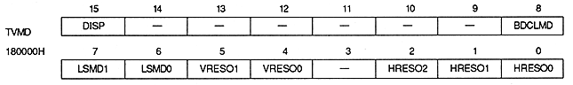

DISP | Processing |
0 | No picture on TV screen |
1 | Display a picture on the TV screen |
BDCLMD | Processing |
0 | display black |
1 | Display back screen |
LSMD1 | LSMD0 | Process |
0 | 0 | Non-interlaced |
0 | 1 | Setting prohibited |
1 | 0 | Single-dense interlace |
1 | 1 | Double dense interlace |
VRESO1 | VRESO0 | Vertical resolution | Displayable monitor |
0 | 0 | 224 lines | NTSC or PAL TV |
0 | 1 | 240 lines | NTSC or PAL TV |
1 | 0 | 256 lines | PAL TV |
1 | 1 | Setting prohibited | − |